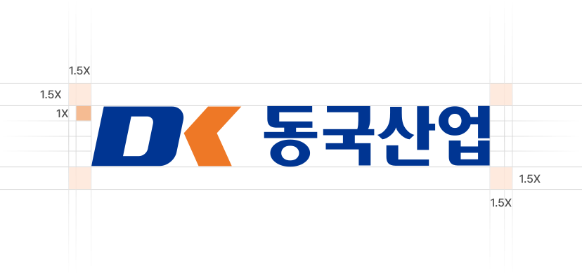
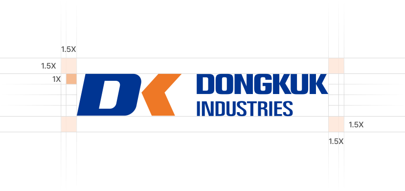

심볼마크
시그니처
시그니처는 가로형을 기본으로 심볼마크와 로고타입을 조합하여 동국산업의 브랜드 아이덴티티를 일관성 있게 전달합니다.
또한 배경 색상과 명도에 따라 지정된 컬러 규정을
적용함으로써 다양한 환경에서도 브랜드 이미지를
명확하고 통일감 있게 유지합니다.
가로형 국문

가로형 영문

CI 색상활용
전용색상
동국산업의 전용색상은 Dongkuk Blue와 Dongkuk
Orange를 중심으로 기업의 신뢰성과 혁신 이미지를
표현합니다.
각 색상은 다양한 매체와 환경에서도 일관된 경험을
전달할 수 있도록 기준에 맞춰 활용합니다.
Dongkuk Blue
#003592
R0 G53 B146
C100 M87 Y0 K0
Dongkuk Orange
#EE7826
R238 G120 B38
C0 M65 Y87 K0